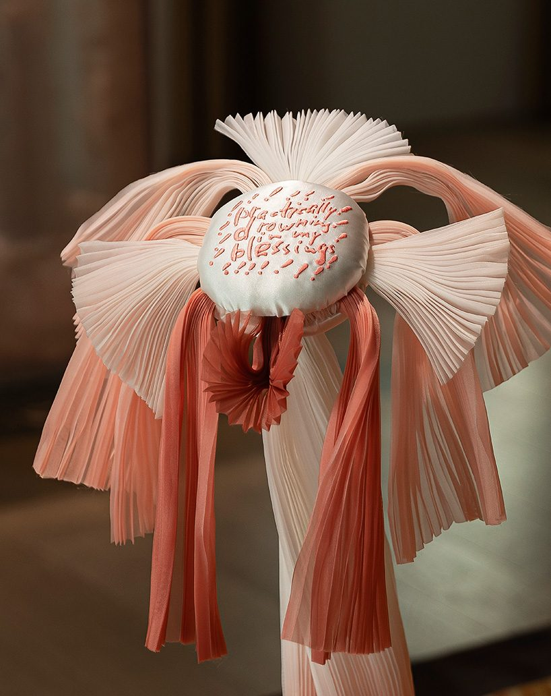
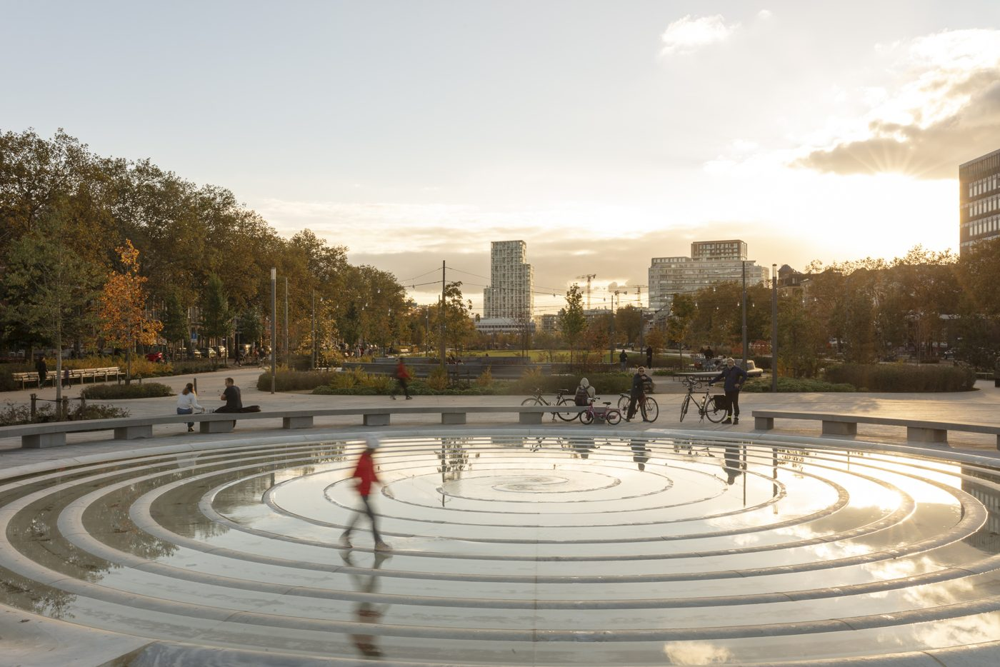
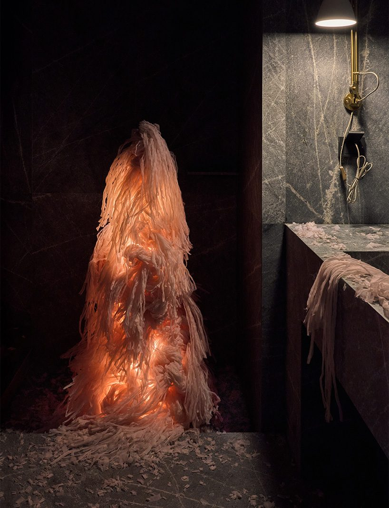

Rain Garden
Company study · 2026-11-16
Wet, quiet and layered: still water reflecting trees, concentric ripples, pleated sheer cloth lit from inside. Colors are mossy greens, wet-bark browns, sand and pale sky gray, with a warm ochre carpet and coral organza as the only warm notes. The feeling is slow and absorbing, a garden you hear more than see.
 (01)
(01)


(02)

(03) (04)
(04)


(05) (06)
(06)
 (07)
(07)
Palette · measured from images
#DADFE3#424A1B#E1D3BF#644624#9D7554#74492BVisual themes
- Ripple
- Key motifs: concentric rings, drops on water, stone circles. Sub motifs: ripple-printed carpet; stepped basin edges; reflection lines.
- Pleat and fall
- Key motifs: pleated translucent organza, ribbons, streaming vertical folds like rain. Sub motifs: coral and pale pink against dark rooms; backlit glow.
- Edge and pool
- Key motifs: timber edging and shallow pools in planted ground. Sub motifs: autumn leaves, reeds, tree trunks reflected.
- Mound and basin
- Key motifs: a raised mound, round seats and sunken circles. Sub motifs: low contour lines in sand and stone, soft ground relief.
Hero material
Duyi Han’s installation uses a custom carpet printed with concentric rain-ripple motifs, pleated translucent organza sculptures, hand embroidery with song lyrics and film dialogue, and resin droplets (https://www.designboom.com/art/duyi-han-rain-inspired-textile-listening-garden-shanghai-villa/, published 2026-10-28, retrieved 2026-11-16). Fiber and construction of the carpet and organza are not stated.
Two surfaces carry the theme: a printed ripple pile for ground (pattern), and pleated sheer cloth for volume (contour). Close-up at (04).
Visual elements
- Photography
- Soft overcast or interior light; reflection and backlight give the depth; low, calm viewpoints.
- Pattern and color for fabric
- Concentric rings broken by irregular ripples; warm ochre ground with rust and moss lines; a cool gray-green set for the garden side.
- Contour and shape for interior parts
- Round basins and seats, a pleated flare, a tall lantern box with a textile face, low relief like a drift mound; all read as soft, rounded and open-topped.
- Detail
- Fine pleating, sheer layers, embroidered line work, timber edge against water.
Visual story
Hypothesis for the board, as a sequence: sky and wet ground (01), cloth falling like rain (02), ripples on water (03) and in carpet (04), light through layers (05), ground relief (06), a lit object for the room (07). The order moves from outdoor water to indoor textile.
Built references (fact)
- Zuidpark, Antwerp
- A former car park on the filled-in Zuiderdokken became a park of about 8 ha, completed in 2024, with rain gardens, a linear water garden and underground rainwater buffers (https://www.publicspace.org/works/-/project/p464-zuidpark; https://landscape.coac.net/en/node/10613; retrieved 2026-11-16).
- Kew Carbon Garden
- A pavilion canopy in flax natural-fiber composite directs rainwater into a rain garden (https://www.architectsjournal.co.uk/buildings/kew-opens-carbon-garden-with-mizzi-studio-designed-mushroom-pavilion, retrieved 2026-11-16). No image used.
Method and limits
- Palette basis
- Two sets: landscape images (01), (03), (06) plus one more Zuidpark image (silent garden with water element) for sky, water, moss, bark and sand; textile images (02), (04), (05) plus one more installation image for the carpet ochre and rust; six clusters kept, near-duplicates and the black room dropped
- Limits
- The installation images are 818 px wide, enough for board size only. Fabric design directions would follow the Fabric Design README; 3D shape studies stay separate. Textile and CMF colors are not added to the master color book from this.
Credits and licenses
(01) Rain garden with timber edging and reflecting water pools, Zuidpark, Antwerp, autumn. Photo Isabelle Pateer. Rain Garden. Brand image, study use. source
(02) Pleated organza sculpture with coral ribbons, Duyi Han, it’s raining outside, it’s raining inside. Rain Garden. Brand image, study use. source
(03) Water circle with concentric stone rings, Zuidpark, Antwerp, autumn. Photo Isabelle Pateer. Rain Garden. Brand image, study use. source
(04) Close-up crop of the rain-ripple carpet, cropped from Duyi Han installation image. Rain Garden. Brand image, study use. source
(05) Backlit pleated organza form in a dark room, Duyi Han. Rain Garden. Brand image, study use. source
(06) Sand mound with round seats, pocket with playful topography, Zuidpark. Photo Isabelle Pateer. Rain Garden. Brand image, study use. source
(07) Tall backlit textile lantern with embroidered surface, Duyi Han. Rain Garden. Brand image, study use. source